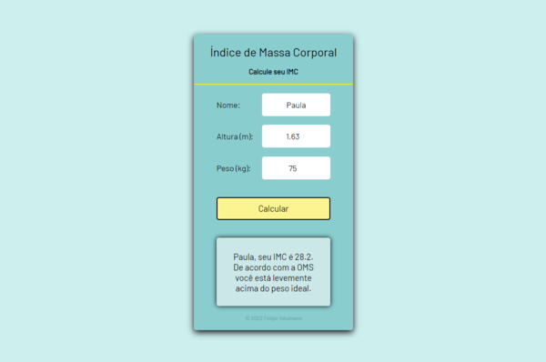
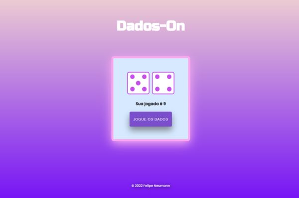

Felipe Neumann
Front-End Developer


Meus Projetos
-
Website para Empresa
Website responsivo criado para uma empresa fictícia de arquitetura e engenharia. O projeto foi desenvolvido durante um curso de programação.
HTML | CSS | JavaScript
-

Calculadora de IMC
Utilizando os valores de referência definidos pela Organização Mundial da Saúde, a calculadora verifica o IMC do usuário por meio da altura e peso informados.
HTML | CSS | JavaScript
-

Jogo de Dados
Dados-On é uma aplicação web que consiste em jogadas individuais de dois dados, que trazem valores aleatórios combinados sempre que acionados pelo jogador.
HTML | CSS | JavaScript
Vamos trabalhar juntos? Sinta-se à vontade para me contatar em qualquer um dos meios listados no início da página :)